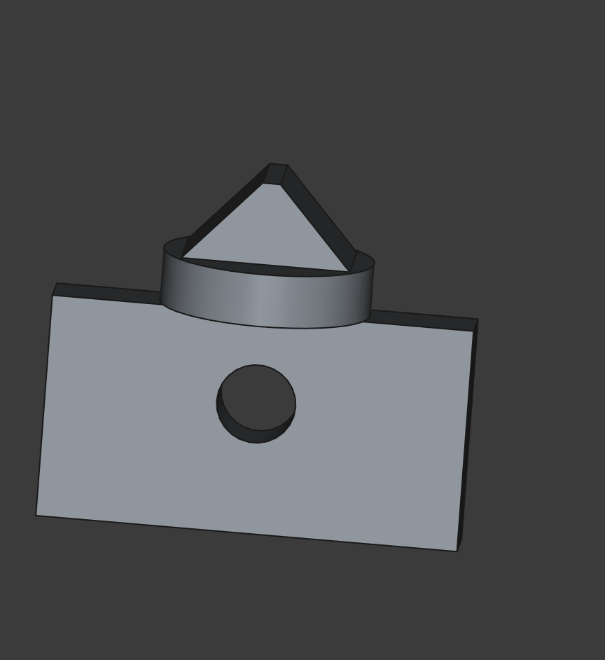
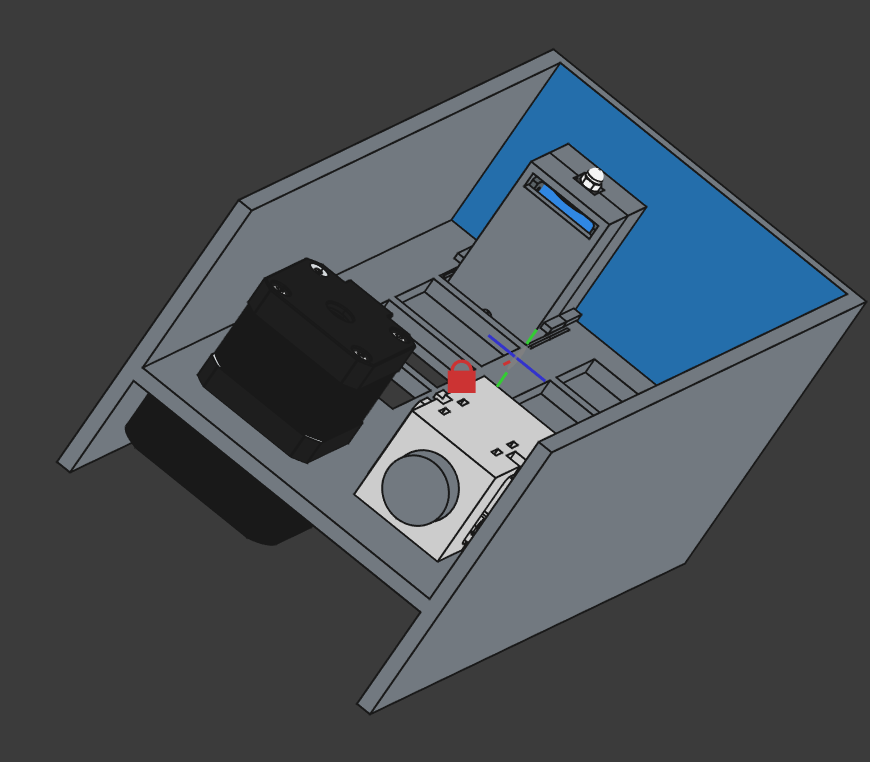
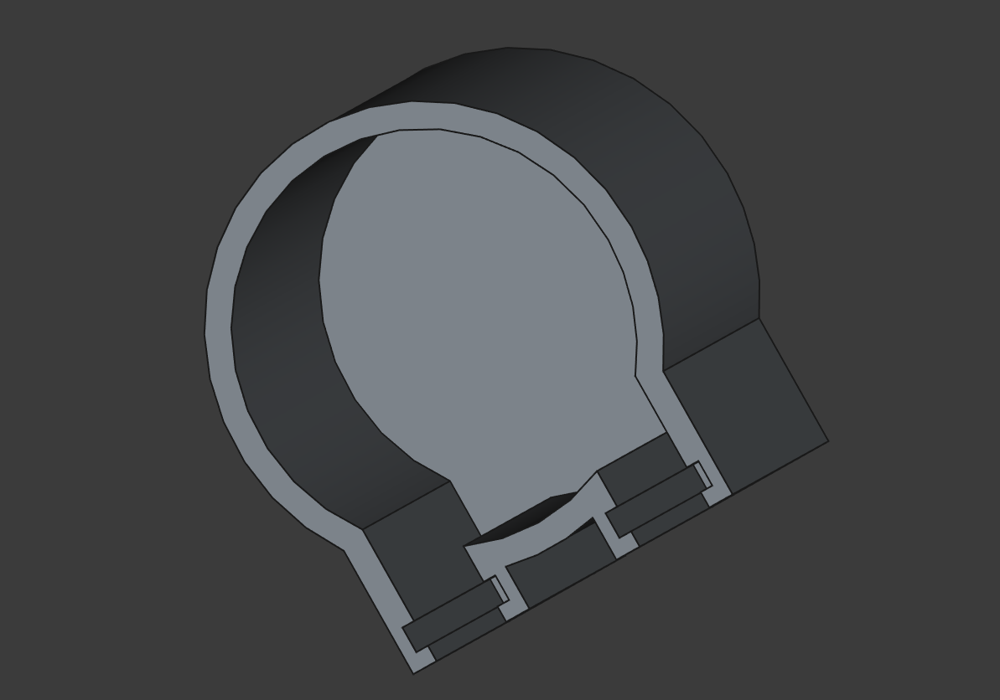
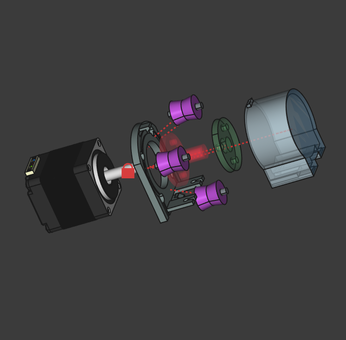
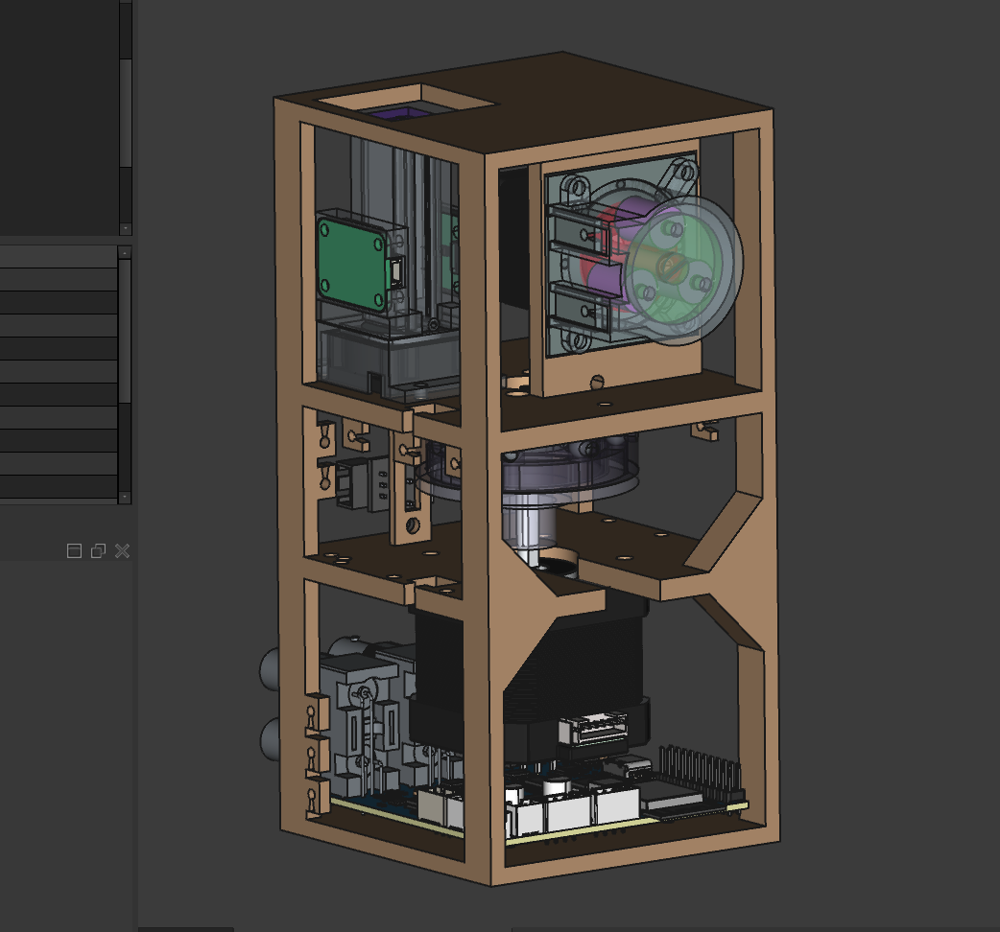
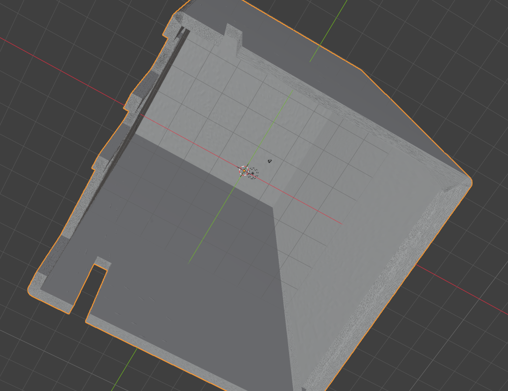

Part number one
The very first modeled part — a flat plate with a raised boss and a square pocket. Nothing you'd photograph for a brochure, but it's the seed the whole enclosure grew from.

Wavie has been built in the open for over a year and a half — from a plank of plywood and eight hobby servos to real hardware on the bench. Start at the beginning and scroll forward, or jump to the latest ↓
Before a single polished render, Wavie was a plywood board on a desk. The whole premise had to be proven first: could you meter reef reagents, mix a sample in a small cell, and read the result — automatically, with cheap parts? So we built exactly that. Eight hobby servos, each pinching a silicone tube, fed a passive 3D-printed spider manifold. An Arduino drove it, a little printed box held the optics, and real ABC Alkalinity and Ca/Mg reagents went in the loop. It was ugly and it worked — and it made the whole project real.

The proof-of-concept rig: eight servo-actuated pinch valves (top and bottom rows) feeding a central spider manifold, with the branded pump and a printed optics box up top.

Running a real test — ABC Alkalinity and Ca/Mg reagents, cups of developed blue sample, a Pi and Arduino driving it all.

The first optical housing — a printed box for the LED, cell, and detector — held together and dropping into the loop.
Everything below is the story of taking this pile of parts and making it small, tight, and reliable — starting with a hard truth from this rig: eight servos and eight valves is a lot of things that can fail. Consolidating that mess became the central mechanical problem of the next year.
With the concept proven, the real design work started — and so did the learning curve. The first parts are about as crude as CAD gets: flat plates, a pocket, a hole. Every project starts here.
The very first modeled part — a flat plate with a raised boss and a square pocket. Nothing you'd photograph for a brochure, but it's the seed the whole enclosure grew from.
A few hours later, the first hollow block with an internal cavity and channels — the earliest attempt at a body that could actually hold something. It changed shape completely a dozen times over the next months.

The first real architecture idea, and the first attempt to kill the eight-servo mess: put every reagent well on one rotating disc, and route them through a single central manifold. The carousel didn't survive to the final design — but "one mechanism reaches every fluid" did, and it's the DNA of today's rotary valve.
Eight reagent wells arranged around a disc, with a central multi-port hub at the middle. The idea: rotate to a well, draw from it, move on — no forest of individual valves.

Small experiments on how fluid actually enters and leaves the cell — funnel and nozzle geometry that would take another year to really get right.

Two decisions this summer set the shape of everything that followed: the brains and the body. We committed to an ESP32-S3 for the controller, and pivoted the whole form factor from a wide box to a tall, compact tower.
Settled on the ESP32-S3 — Wi-Fi, plenty of PSRAM, and enough I/O to drive two steppers, the optics bus, an addressable LED strip, and five probe channels at once. The Arduino from the proof-of-concept simply couldn't carry all of it.
Committed to a vertical tower: a slim faceplate with the reagent-well windows stacked down the front. From here on, every part had to earn its footprint. Compact-first.

The biggest mechanical month of the project. This is where the eight-servo fluidics finally died: instead of eight pinch valves, a single motor-driven rotary selector valve — one disc, eight ports (six reagents, sample, waste), 45° apart. The pump got its face, the interior was integrated for the first time, and the enclosure got its industrial-design pass — including the crescent-ripple mark that's now our logo.
The peristaltic pump module picked up its blue badge — the concentric-ripple mark you now see on the site and on every board. First time Wavie looked like a product instead of a mechanism.

The pump, the selector, and the cell all packed into one case in CAD. Cramped, and a couple of parts were fighting for the same three millimetres — but it fit, and "compact-first" stopped being a slogan.

The rotary distribution valve took its real shape: six reagents, a sample line, and waste across eight ports exactly 45° apart, driven straight off a stepper with a single home switch. Eight servos and a spider manifold became one rigid, repeatable rotary index. This was the design change the whole first year was building toward.

The first proper enclosure: a tall rounded tower with the crescent embossed near the base and scalloped slots for tubing along the bottom edge. The whole stack lifts out as one.


We stopped bolting together off-the-shelf subassemblies and started designing our own — the two subsystems accuracy depends on most.
We designed our own peristaltic pump head from the ground up — rotor, rollers, and the C-shaped occlusion track that squeezes the tube. The goal: one bidirectional pump that meters every fluid to a couple hundredths of a millilitre, with nothing but silicone ever touching the sample.

The first real cross-section through the optical cell, with the LED, detector, and cuvette on a single axis. Getting this geometry right — and the chamber light-tight — is the whole ballgame for colorimetric accuracy.

The month Wavie stopped being a mechanism and became a computer. The optics module matured, and the V0 AutoTester mainboard went from schematic to autorouted to rendered — ESP32-S3, two stepper drivers, isolated probe front-ends, CAN for future modules, and a pufferfish named "Le Fish" hiding in the silkscreen.
The optics module laid open: three wavelengths of LED, a light detector, and the beam path running straight down through the cuvette. This is how Wavie reads chemistry — measuring how much light a developed sample absorbs, no test strips anywhere.

The first full mainboard, routed: ESP32-S3, dual TMC stepper drivers, isolated pH/ORP front-ends, and a CAN bus for future modules. Signed and dated in the copper — V0 AutoTester Dev Board, Evan C, 11/17/25 — with a pufferfish in the corner, because a board should have some personality.

The same board, rendered — ESP32 module, power stage, and two BNC probe jacks standing off the front edge. Seeing it in 3D is when a schematic finally feels like an object.

Dropped the freshly-designed mainboard into the full tower assembly. For the first time, optics, fluidics, and brains all shared one model — and the probe jacks lined up with the enclosure exactly where they needed to.

Two big firsts. The mobile app got its first real screens, and every subsystem finally came together in one clean model. The pieces stopped being separate projects and started being a product.
The first real UI. A dashboard with live probe tiles and colorimetric history for all five wet-chemistry parameters — alkalinity, calcium, magnesium, nitrate, phosphate — plus reagent levels and dosing control. The Dose and Power tabs are already stubbed in: this is where Wavie, Wavie Dose, and Wavie Power become one system.


Every subsystem in a single model: optics and its stepper up top, the rotary valve and home switch in the middle, the pump and mainboard at the base. First time it all fit in one tower without something overlapping something else.

The jump from CAD to atoms. We printed the first full three-tier chassis, refined the enclosure in Blender, brought the V0 mainboard back populated, lit the status strip, and kicked off the sibling Wavie Power board — smart outlets on the same bus Wavie already speaks.
The first complete three-tier chassis off the resin printer, loosely populated with the pump, the valve, and a stepper to check fit and tubing routing. Held together with hope and a few zip ties, but the first time the whole thing existed off-screen.

Refining the full cutaway in CAD and taking the outer shell into Blender to work the surface finish and texture. Not glamorous work, but it's what turns a functional box into something you'd want on your stand.


Started the sibling board: eight switched AC outlets, a relay array, and its own microcontroller riding the same CAN bus Wavie already carries. Pumps, lights, and heaters on one app — the ecosystem we hinted at, now in layout.

Holding the populated ESP32-S3 mainboard for the first time — USB-C, 24 V input, isolated probe inputs, JST everything. That same night, the 33-LED status strip ran its first rainbow straight off first-boot firmware. The PCB stopped being a render and became a computer.


The month Wavie became fully physical. The first optical bench tests pushed real light through real cuvettes, the probe kit arrived for calibration, and we printed and test-fit the rotary valve rotor. Peak messy-bench season — and the most fun we've had on the project.
The printed three-tier chassis, the pump, the tubing, and the wiring all mounted together on the bench. Rough, half of it jumper wires — but it stands, and the fluid path runs continuously from sample line to cell to waste.

Bench-testing the optical path for the first time: a real glass cuvette beside our printed holder, dialing in the 10.6 mm path length. This little cell is the heart of every colorimetric test.

The pH and ORP probes showed up with their buffer sachets (6.86, 9.18, 10.01). Wavie's probe channels are galvanically isolated, so each one gets calibrated against known references before we trust a single reading off the tank.

The eight-port selector rotor came off the printer — the direct descendant of that eight-servo mess from the very first bench. Six reagents, sample, waste; one rotor; 45° between ports. Test-fitting against the glass cell, it indexes cleanly.

July 29, 2026

Eighteen months after that plank of plywood, the geometry is frozen. The complete Wavie assembly is modeled and fit-checked end to end — three tiers, optics up top, fluidics in the middle, electronics at the base, all in a single sealed tower barely taller than a banana.
Every step above led here: the eight-servo proof-of-concept that became a single rotary valve, the pump we designed part by part, the spectrophotometer cell, and the ESP32-S3 mainboard with its isolated probe inputs. With CAD locked, we're heading into the first full beta build — and beta members get to shape what comes next.


Follow this build as a beta member. Your $500 deposit locks in your unit and your place in the community that shapes it.
Reserve Your Spot — $500Secure checkout via Stripe